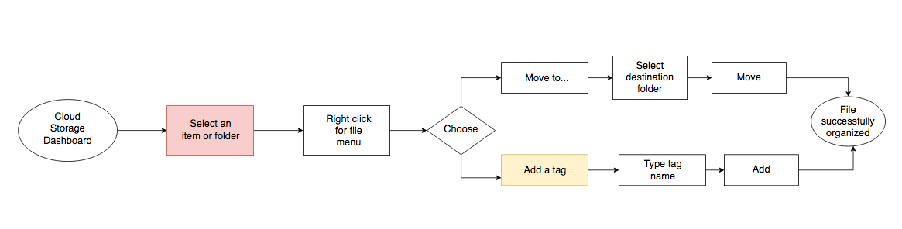
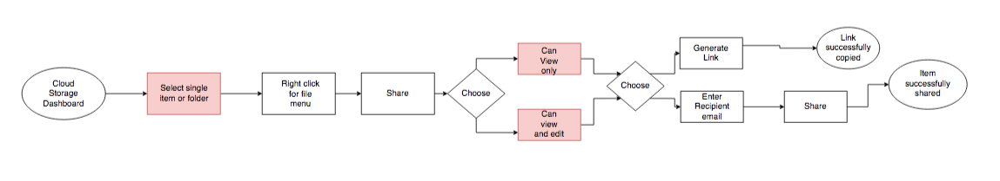

UX Study Case
About the application
From working professionals to small business owners, to students, these users may upload and share a variety of content on a daily basis. These items can be overwhelmingly disorganized on a busy dashboard. Although there are various cloud storage products on the market, there is yet to be one that emphasizes organization and collaboration.
Solution
Comet aims to declutter dashboards and ease workflows through emphasizing organization and collaboration. Comet offers the following features:
1)Tagging feature to help organize content
2)Real time collaboration across all documents
3)Ability to save web links for future reference
Who Are the Cloud Storage Competitors?
01 Research and Define
In order to better understand the competition and the client's required features for this product, I did a competitive analysis of three major cloud storage platforms: Google Drive, Dropbox, and Box. Each cloud storage product has their own strengths and weaknesses.
Google
Strengths: Great for content creation and collaboration
Weakness: Lacks organization system
Dropbox
Strengths: Easily upload content from desktop/mobile
Weakness: Lacks organization, and depends on Google for content creation
Box
Strengths: Geared towards businesses and enterprise
Weakness: Lacks organization, and depends on Google for content creation
These are some of the cloud storage platforms that are well established, and they have a great set of features that keep users satisfied.
However improvements can be made in regards to organization and collaboration. This allows a newcomer to enter into the market.
As a newcomer, Comet can position itself as a cloud storage application that emphasizes organization and collaboration, with all the useful features of its top competitors.
Identifying the Users
02 Strategy
Two personas were created to help further identify the direction of this new cloud storage product.
Angga, 30 years old - Director of IT Company in Indonesia
"I have so many projects going on and creating so many folders just clutters up my dashboard too much. I just want a more organized workspace."
Goals
1. Upload and share invoices within teams and across teams
2. Organize invoices in specific groups/categories per project
3. Update project milestones and allow different teams to access project timeline
4. Would like to find folders by searching specific keywords
Pain Points
1. Invoices can get lost in the cloud due to limited organizing/tagging features in current cloud storage devices
2. Many people are asking for the same information regarding different projects, so there should be a central file everyone can have access to
3. Cloud storage dashboard has many files and looks disorganized
Lina, 23 years old - Student and Blogger
"I am currently taking so many classes! Being able to back up and access group projects or inspiration articles at all times is a must."
Goals
1. Save articles and inspiration images in one place
2. Back up and organize pictures from the digital camera and smartphone
3. Scan and organize sketches for school projects
4. Organize school work files and personal blog files in separate categories
Pain Points
1. Not enough storage space
2. Saved weblinks gets lost in the bookmarks section of the web browser and there is no "on-the-go" access
3. Group projects can be difficult to collaborate on
4. Hard to keep track of changes for a file
User Stories
Before the design started it was important to create user stories and highlight the important tasks to create a prodcut that would be viable. A list of user stories were created with the high priorty tasks being the main focus for the iteration.
1. Sign up for an account using my email, Google account, or Facebook Account
2. Upload a file from a computer or mobile device
3. Share a folder or group of items with someone and vice-versa
4. Create content: a new document, spreadsheet, presentation
5. Collaborate with others in real time on a file
6. Share a single item with someone and vice-versa
Identifying the Product
03 Information Architecture
From the user stories, I mapped out user flows to include high and medium priority tasks. The two user flows shown here are about organization and collaboration which is aimed at helping users create a more efficient workflow.
One flow highlighted here is adding a tag to a file or folder for additional organization. Competitiors such as Google Drive, Dropbox, and Box do not offer such organization features.
On the competitors platforms, users are only able to see their files under “Files” or “Recents.” With Comet, users will be able to create their own categories under “My Tags” so they can futher organize the content they upload or create.
Comet Organizational Flow  Comet Collaboration Flow 
04 Branding & Identity
Comet as an collaboration platform prioritize where user can connect together and making new ideas in the process.
The blue color represents safety and reliability thus used as color brand, same goes with its palette and typography.
See more : Style Guides
Wireframe & Final Mockups
Phone
(+62) 889 7777 9265Address
IndonesiaSerang, Banten